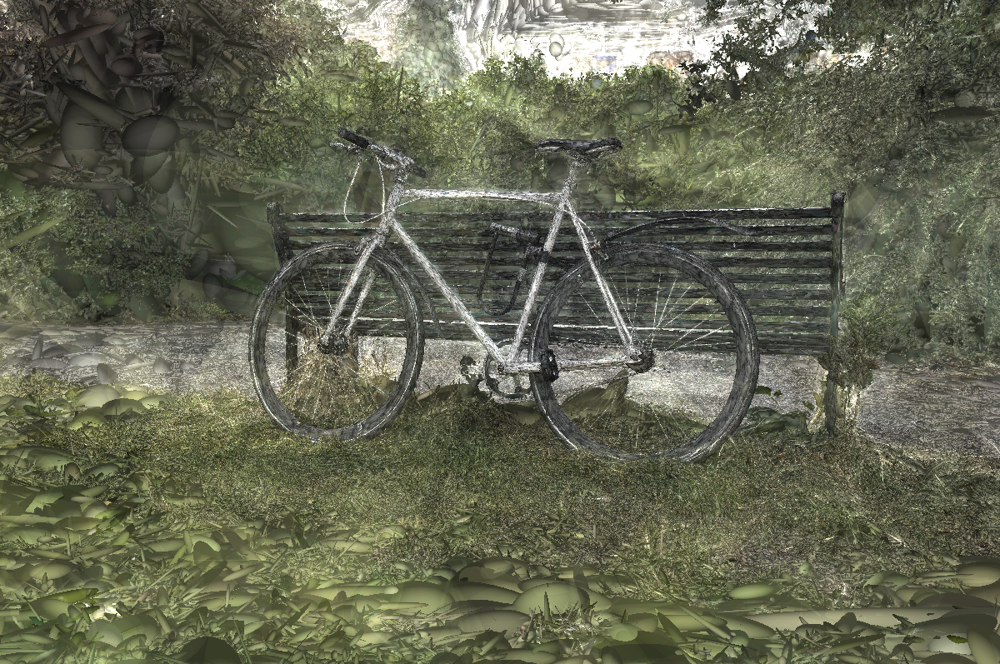

The field of Novel View Synthesis has been revolutionized by 3D Gaussian Splatting (3DGS), which enables high-quality scene reconstruction that can be rendered in real-time. 3DGS-based techniques typically suffer from high GPU memory and disk storage requirements which limits their practical application on consumer-grade devices. We propose Opti3DGS, a novel frequency-modulated coarse-to-fine optimization framework that aims to minimize the number of Gaussian primitives used to represent a scene, thus reducing memory and storage demands. Opti3DGS leverages image frequency modulation, initially enforcing a coarse scene representation and progressively refining it by modulating frequency details in the training images. On the baseline 3DGS, we demonstrate an average reduction of 62% in Gaussians, a 40% reduction in the training GPU memory requirements and a 20% reduction in optimization time without sacrificing the visual quality. Furthermore, we show that our method integrates seamlessly with many 3DGS-based techniques, consistently reducing the number of Gaussian primitives while maintaining, and often improving, visual quality.